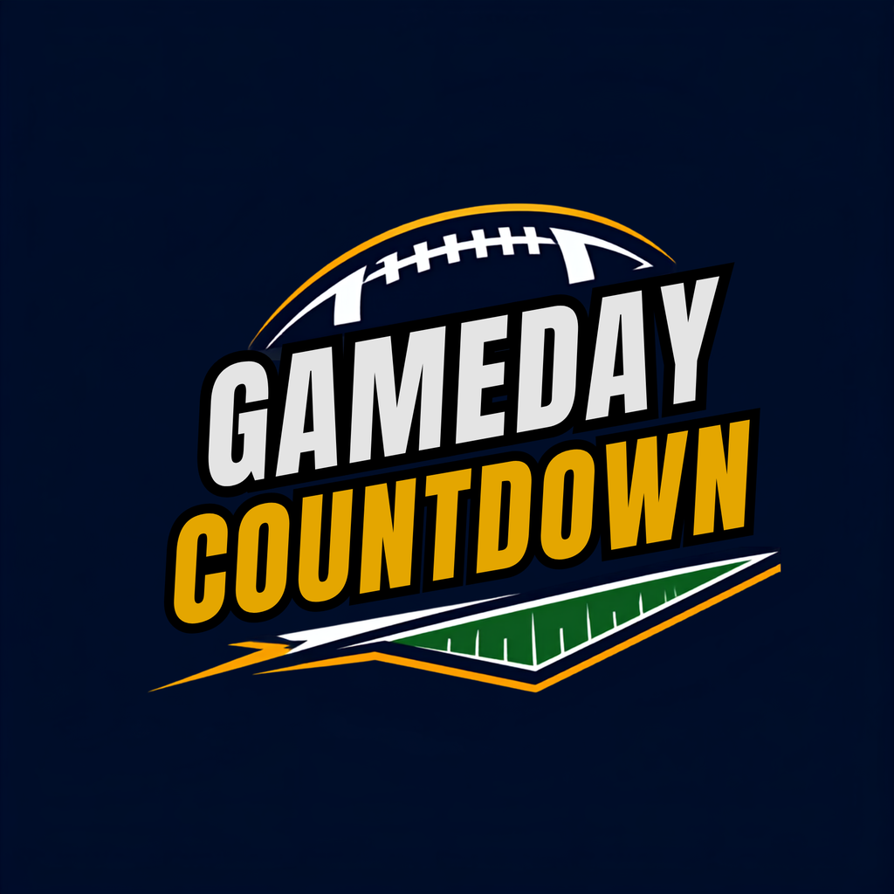
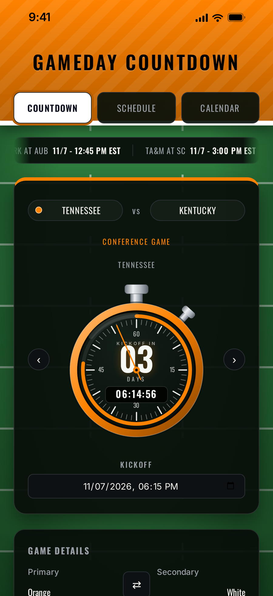
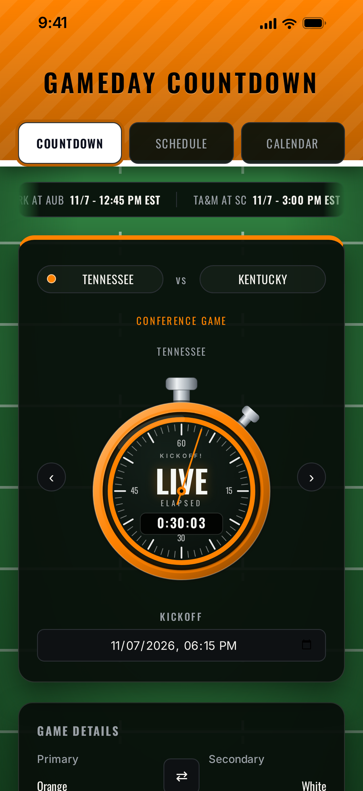
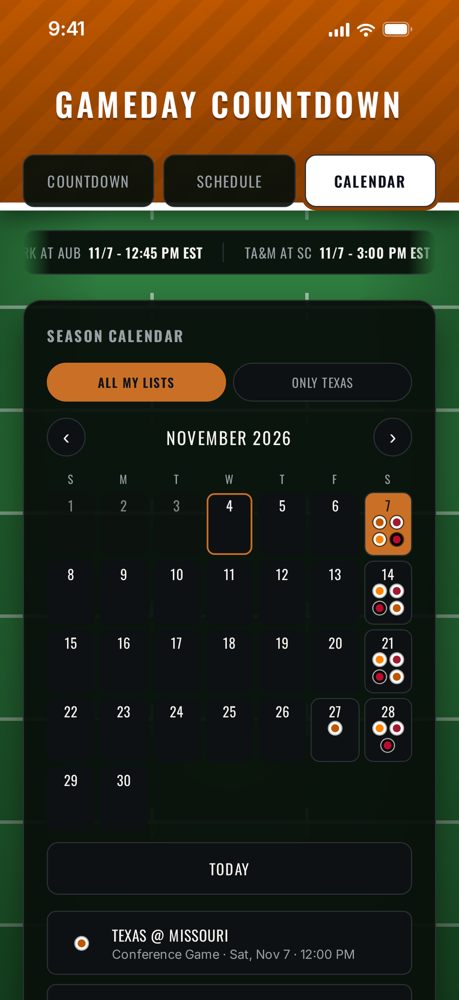
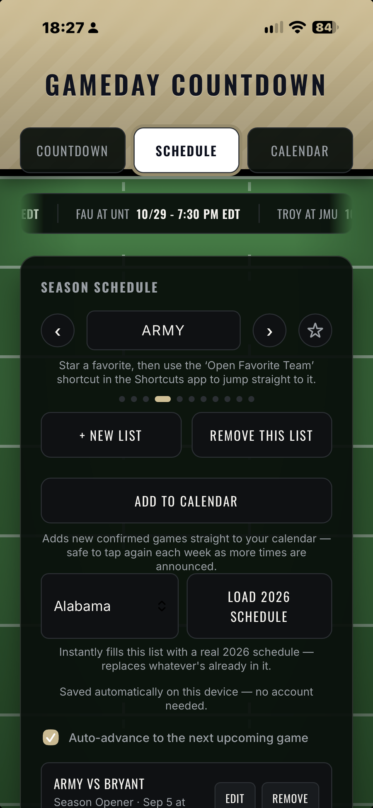
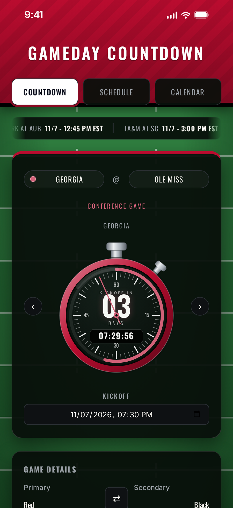
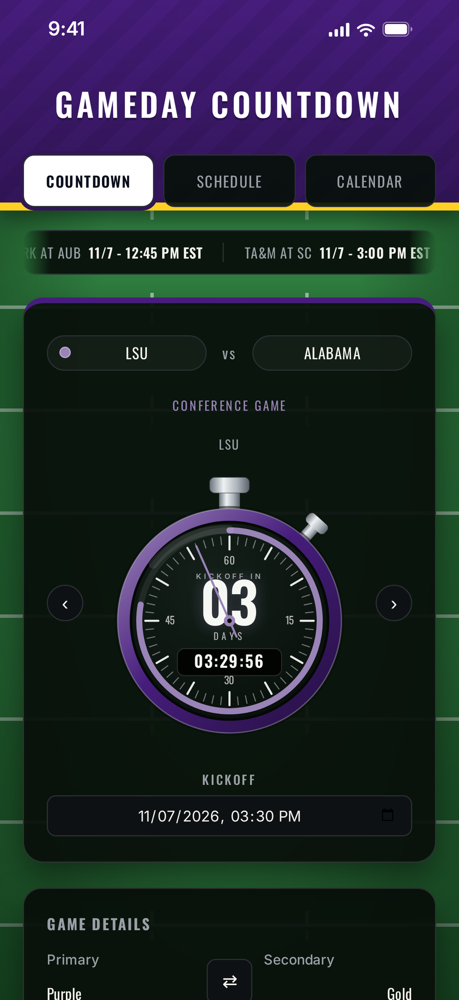
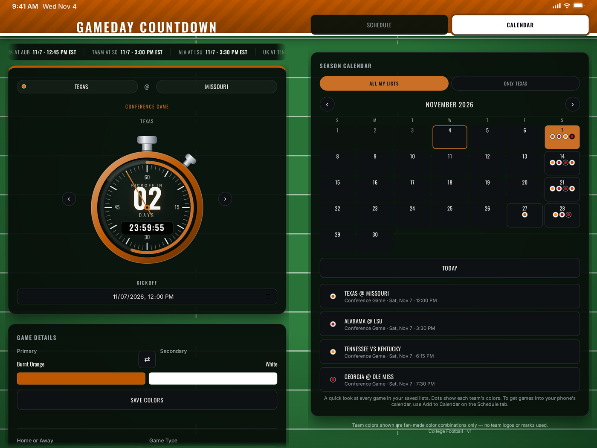
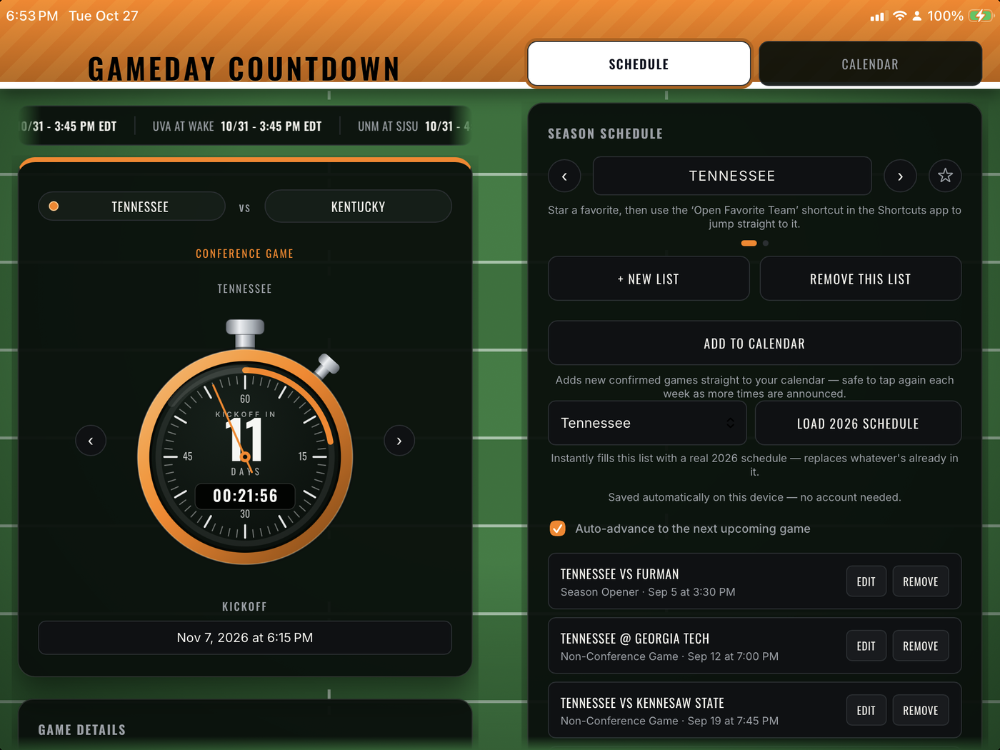
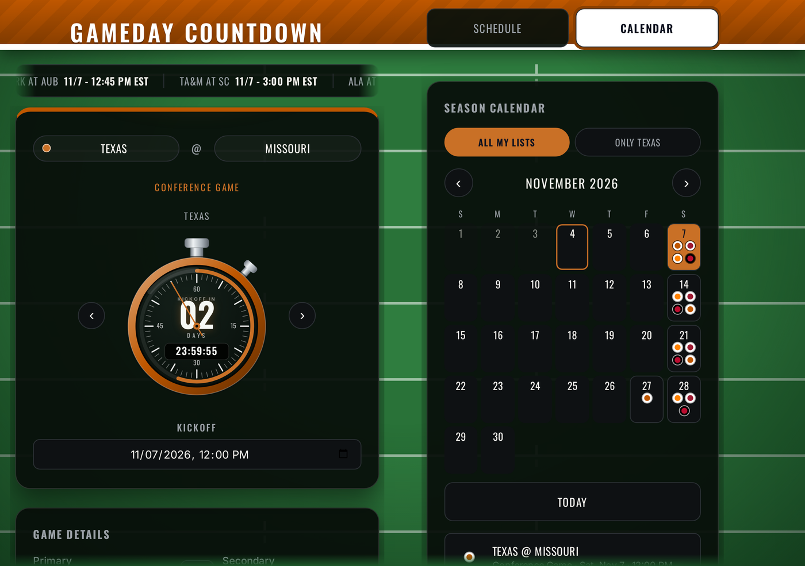

A team-colored stopwatch counts down to every kickoff, on a turf field.
Gameday Countdown turns any college football matchup into a live, team-colored stopwatch. Pick your team, and the whole screen takes on its colors while the countdown runs down to kickoff in days, hours, minutes, and seconds. Forty-eight programs come preloaded with their 2026 schedules, including the full SEC, the full Big Ten, Army, Navy, and Tulane, so a whole season is a tap away.
Download on the App Store
A look inside the actual app, from the stopwatch to the season calendar.





Unfold an iPhone Duo and hold it wide, or turn your iPad sideways, and the countdown stays on the left with Schedule and Calendar on the right. On every other screen it looks as it always has.



Tap Load 2026 Schedule and your team's whole season is ready to go. No typing required.
A metal stopwatch in your team's colors counts down to kickoff. The second hand ticks with the real seconds, and a ring fills as the wait goes on. It sits on a striped turf field under an end-zone band in your colors.
The whole screen takes on your team's primary and secondary colors, with one tap to flip which one leads. Save it once and it stays that way.
Every kickoff shows in your phone's own time zone, and the countdown and your calendar events always agree.
At kickoff the stopwatch turns to LIVE and times the game while it is being played. Once the game is over, the countdown moves on to the next one by itself.
Keep more than one team's season going at once. Each list holds its own games, so following several teams never means losing track of any of them.
Sign in to iCloud and your lists, your favorite team, and your calendar records show up on your other iPhones and iPads. A new device starts with your teams already there. There is a switch on the Schedule tab if you would rather keep a device on its own.
See every game from all your lists on one month view. One tap adds your team's confirmed games to your iPhone calendar. The app asks only for permission to add events, and it cannot read anything in your calendar.
Many kickoff times are not announced until days before the game. Games without a time show their date and Time TBD. When new times come out, an Update Now banner brings them in, and any bowl or playoff games you added yourself are kept.
Unfold an iPhone Duo and hold it wide, or turn your iPad sideways, and the countdown stays on the left with Schedule and Calendar on the right. On every other screen it looks as it always has.
A running scores ticker keeps today's college football scoreboard moving across the top of the screen.
No account, no tracking, no ads. Your schedules live on your device and work offline, and iCloud sync is optional and goes to your own iCloud only.
Buy it once. As schedules are finalized each season, updates come to you free.
Star one schedule as your favorite. In the Shortcuts app, the Open Favorite Team shortcut jumps straight to it.
Gameday Countdown also runs on Apple silicon Macs as an iPhone app, in a phone-sized window.
Fastest way: on the Schedule tab, pick your team and tap Load 2026 Schedule. The steps below are for a team that isn't included, or for a custom schedule.
A season takes a few minutes to build, and it only gets faster from there.
Note: if you skip step 1 and just start adding games, they'll land in whichever schedule is already active, so creating the new list first is what keeps this team separate from your others.
Your lists now follow you. Gameday Countdown syncs your lists, your favorite team, and your calendar records across your iPhone, iPad, and iPhone Duo through your own iCloud, so a new device starts with your teams already there.
Dozens of teams come preloaded with real 2026 schedules. Tap Load 2026 Schedule on the Schedule tab, and if your team is included, you're set in one tap.
If your team isn't in the list yet, let us know and we'll add it.
Request Your TeamSign in to iCloud with the same Apple ID on both devices and open Gameday Countdown on the new one. Your lists appear within a few seconds. If they do not, close and reopen the app once.
Open the Schedule tab and use the switch labeled Sync my lists across my devices with iCloud.
Open the Schedule tab and tap Update Now when the banner appears.
Turn an iPad sideways, or unfold an iPhone Duo and hold it wide.
Schedule tab, find the game in the list, tap Edit. It jumps you to the Countdown tab with that game's details loaded. Change anything, then tap Save Changes to update it in place, or Cancel to back out.
Use the arrow buttons next to the big Days number, or swipe left and right anywhere on the scoreboard. The same arrows also appear at the top of the Season Schedule panel on the Schedule tab.
Tap the Calendar tab, use the arrows to change months, and tap a day with dots to see its games.
Schedule tab, switch to the schedule you want to remove, tap Remove This List. You'll be asked to confirm, since this deletes every game saved in it. Disabled if it's your only schedule.
Schedule tab, find the game in the list, tap Remove.
Schedule tab, the "Auto-advance to the next upcoming game" checkbox. When it's on, the countdown always shows whichever saved game is soonest and moves itself forward once a game passes. Turn it off to browse and hold on one game manually.
Tap the swap arrow next to the color swatches to preview the flip, then tap Save Colors. This updates the default for that team going forward and updates every game you've already saved for that team, so the change actually sticks everywhere.
Schedule tab, tap Download Schedule, then choose Save to Files in the share sheet (or AirDrop or send it). On another device, tap Upload Schedule and pick that file. It replaces whatever schedule is active there, so switch to (or create) the right list first. This works without iCloud.
Countdown tab, Copy Link. This copies a web address with that exact matchup baked in: team, colors, opponent, and kickoff time, so whoever opens it sees the same countdown you do.
The opponent field on the Countdown tab is a plain text box. Just type any name, it doesn't have to be one of the teams in the dropdown.
Schedule tab, tap Add to Calendar, allow Add Events Only the first time, and the games appear in the Calendar app. If a kickoff time changes after you've added a game, tap again to add the new time and delete the old event.
Schedule tab, tap the star next to the schedule's name.
Team colors shown are fan-made combinations for identification only. No official team logos or marks are used. Gameday Countdown is an independent app and is not affiliated with or endorsed by any college, university, athletic conference, or governing body.